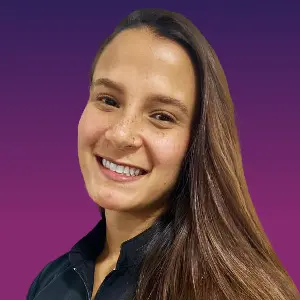

Ponentes Especialistas
Johana Viloria
Bailarina y Coreógrafa
Actividad: Johana's Dance “Emotion in Motion”
Johana Viloria
Bailarina y CoreógrafaActividad: Johana's Dance “Emotion in Motion”
Área: Baile y Coreografía
Con más de 25 años de trayectoria en el mundo de las artes escénicas, Johana Viloria ha consolidado su carrera como una figura referencial en la formación integral de bailarines en Caracas. Fundadora y directora de Johana's Dance Academy; una escuela de desarrollo integral en el casco central capitalino que busca sembrar y crecer el amor por el arte de la danza en niños y adolescentes. Con más de 20 producciones de gran formato en distintos teatros de la capital, Johana's Dance entendió que el abordaje de la danza requería un cambio y producto de allí nace su enfoque en la creación de "coreografías con sentido"; una metodología basada en la danza con propósito, narrando historias con ritmo que incluso involucran al espectador para crear experiencias de impacto. En la gimnasia rítmica contemporánea, la artisticidad es un factor diferenciador en el panel de jueces. Johana aporta su vasta experiencia en el dominio del escenario y la proyección emocional, herramientas críticas para que la gimnasta logre una conexión genuina con el jurado y el público. Durante este campamento, su intervención permitirá ofrecer educación a las atletas para alinear la expresión corporal con el carácter musical, elevando la identidad artística y la madurez interpretativa en sus rutinas.

Andrea Marichal
Fisioterapeuta
Actividad: "El poder de la prevención: tu cuerpo es tu mejor implemento"

Andrea Marichal
FisioterapeutaActividad: "El poder de la prevención: tu cuerpo es tu mejor implemento"
Área: Fisioterapia
Licenciada en Fisioterapia por el Colegio Universitario de Rehabilitación "May Hamilton", Andrea Marichal combina la formación académica con una profunda pasión por el movimiento. Su trayectoria académica incluye certificaciones internacionales, un Diplomado en Docencia Universitaria y formación especializada en el área de fisioterapia musculoesquelética; especialidad enfocada en el diagnóstico y tratamiento de lesiones en músculos, huesos, articulaciones, tendones y ligamentos lo que le permite abordar la rehabilitación desde una perspectiva clínica precisa y actualizada. Andrea fue gimnasta del Club menor de Gimnasia de la UCV durante 14 años. Esta experiencia de vida le otorga una comprensión única sobre la biomecánica, las lesiones frecuentes y las exigencias físicas específicas de la disciplina. Actualmente, como atleta de Pole Dance, se mantiene vinculada a disciplinas de alta demanda estética y funcional como el baile y la acrobacia. Andrea brindará a las participantes herramientas fundamentales para la prevención de lesiones, el cuidado del cuerpo y la optimización del rendimiento físico. Su objetivo es empoderar a las gimnastas con conocimientos sobre su propia anatomía y la mecánica de sus movimientos para mitigar riesgos de lesión y desarrollar una carrera deportiva saludable, longeva y de alto impacto.
Darío Ortega
Mental Coach | Alto Rendimiento
Actividad: "El ABC de la Mentalidad para el Alto Rendimiento en GR."
Darío Ortega
Mental Coach | Alto RendimientoActividad: "El ABC de la Mentalidad para el Alto Rendimiento en GR."
Área: Mental Coaching
Con una formación académica de primer nivel que incluye un Doctorado en Consejería y Asesoría (Universidad Ser Miami, EE.UU.) y una Maestría en Liderazgo, Darío Ortega es un referente en el desarrollo de la mentalidad para el éxito deportivo. Su trayectoria destaca por su rol estratégico como Mental Coach en organizaciones de élite, incluyendo equipos campeones de la Liga Venezolana de Béisbol Profesional (Navegantes del Magallanes) y diversas instituciones de la Liga Mexicana de Béisbol. Egresado de la Universidad de Carabobo como Terapeuta Psicosocial, Darío ha perfeccionado metodologías para la creación de ambientes organizacionales óptimos y el fortalecimiento psicológico de atletas en procesos de alta presión a través de alianzas con el Comité Olímpico Venezolano y la Federación Venezolana de Béisbol. En una disciplina como la Gimnasia Rítmica donde la precisión y la concentración son determinantes, la fortaleza mental es el pilar que conduce a la ejecución limpia y controlada o a una gestión resiliente ante el fallo. Darío Ortega aporta al campamento una estructura diseñada para que las gimnastas rítmicas desarrollen la configuración psico-cognitiva necesaria para enfrentar la preparación y la competición: una mentalidad para transformar el potencial físico o los fallos en un rendimiento de nivel superior sobre el tapiz.
Merling Maldonado
Nutricionista
Actividad: Charla con grupo panelista sobre nutrición, "Equilibrio Real"
Merling Maldonado
NutricionistaActividad: Charla con grupo panelista sobre nutrición, "Equilibrio Real"
Área:Nutrición, Salud y Bienestar
Merling es egresada de la Escuela de Nutrición y Dietética de la Universidad Central de Venezuela (UCV) con especialización en Nutrición Clínica en la misma casa de estudios. Su labor profesional se desarrolla en la vanguardia de la salud nutricional como parte de la Unidad de Nutrición Integral y Trastornos de la Conducta Alimentaria (UNITCA) en el Centro Médico de Caracas. Con una sólida trayectoria como clínica y conferencista, Merling se ha enfocado en visibilizar y educar sobre la identificación temprana y el abordaje integral de los TCA; trastornos psicológicos graves que conllevan alteraciones de la conducta alimentaria. En disciplinas de alta exigencia estética y física como la gimnasia rítmica, la nutrición debe ser un aliado del rendimiento, no una fuente de ansiedad y enfermedad. Su intervención aporta una visión humanista y científica para mejorar la relación con la comida, dotando a gimnastas y entrenadores de estrategias para identificar señales de alerta y comprender los riesgos asociados a estos trastornos.
Ricardo Giménez
Nutricionista Clínico Infantil
Actividad: Charla con grupo panelista sobre nutrición, "Equilibrio Real"
Ricardo Giménez
Nutricionista Clínico InfantilActividad: Charla con grupo panelista sobre nutrición, "Equilibrio Real"
Ricardo es Nutricionista Clínico Pediatra en el Centro Médico de Caracas.
Gilmary Marcano
Nutricionista
Actividad: Charla con grupo panelista sobre nutrición, "Equilibrio Real"
Gilmary Marcano
NutricionistaActividad: Charla con grupo panelista sobre nutrición, "Equilibrio Real"
Área:Nutrición, Salud y Bienestar
Gilmary es Licenciada en Nutrición y Dietética con especialización en Nutrición Clínica por la Universidad Simón Bolívar (USB). Realiza evaluación y prescripción dietética en pacientes adultos, pediátricos, embarazadas, o con patologías que ameritan cambios en el régimen de alimentación. Especialista en promoción y consejería de lactancia materna. Actualmente se desempeña como nutricionista clínico infantil en el Centro de Gastro-Pediatría de Caracas.
Andreina Sánchez
Nutricionista
Actividad: Charla con grupo panelista sobre nutrición, "Equilibrio Real"
Andreina Sánchez
NutricionistaActividad: Charla con grupo panelista sobre nutrición, "Equilibrio Real"
Sin biografía.